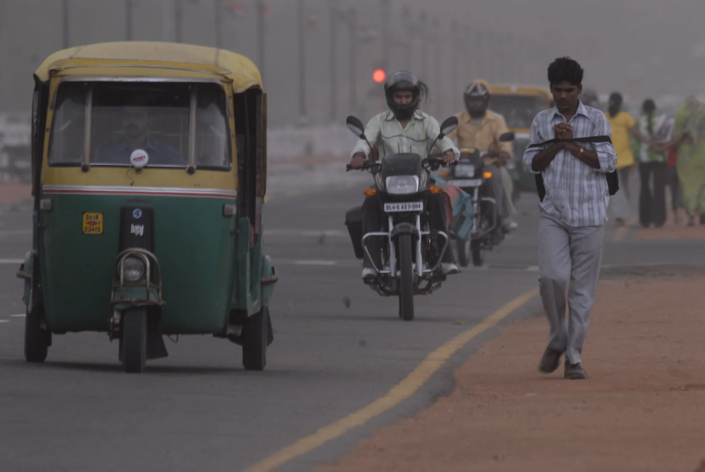

A comprehensive documentary record spanning three and a half decades behind the lens — capturing key milestones, international assignments, Cannes recognition, and an enduring humanitarian legacy.
Every era leaves its own light. Here is how Shashi Sahai's lens moved with the world, one decade at a time.
A single darkroom and hand-loaded rolls of film. Shashi Sahai Studio begins as a modest documentary sanctuary dedicated to the human story.
Travel and culture assignments take the lens across five continents, building an expansive, internationally celebrated archive of portraits.

The archive crosses gracefully into the digital age without losing its documentary soul — grain gives way to crisp luminescence while winning the Bronze at Cannes.

Over a million frames later, Shashi Sahai stands as a living cultural archive of people, places, and the compassion between them.

Every roll of film, contact sheet, and digital negative tells part of the same story — a continuous, heartfelt record of how the world lived, decade after decade.